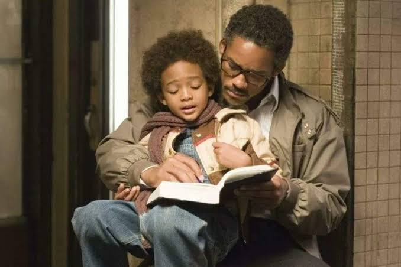
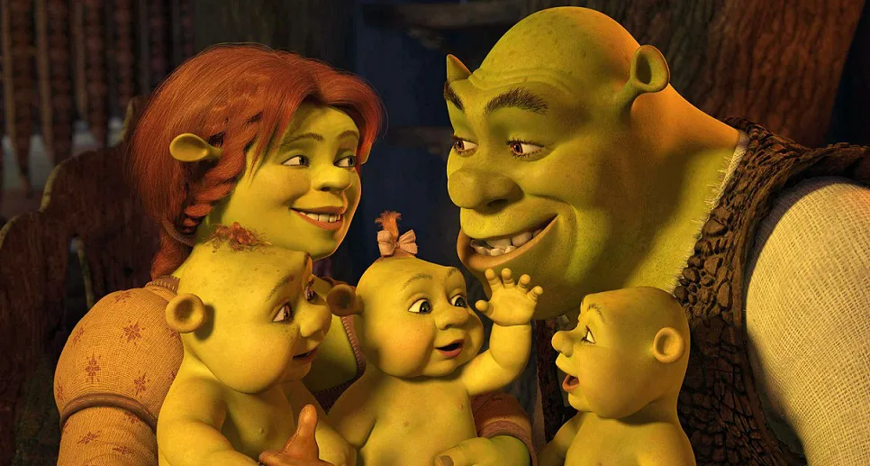

Tenha paciência
Ser pai pela primeira vez envolve muitas mudanças e situações novas. É normal não saber exatamente o que fazer em alguns momentos. Tenha paciência consigo mesmo, com o bebê e com a mãe, pois todos estarão aprendendo juntos.
Recomendações
Ser pai pela primeira vez envolve muitas mudanças e situações novas. É normal não saber exatamente o que fazer em alguns momentos. Tenha paciência consigo mesmo, com o bebê e com a mãe, pois todos estarão aprendendo juntos.
Mais do que estar perto fisicamente, é importante participar dos momentos do bebê. Trocar fraldas, dar banho, ajudar na alimentação e simplesmente passar tempo juntos são formas de criar um vínculo forte desde os primeiros dias.

Depois do nascimento, a atenção costuma ficar totalmente voltada para o bebê, mas a mãe também precisa de cuidado e apoio. Ajude nas tarefas, pergunte como ela está e esteja ao lado dela nos momentos mais difíceis.
